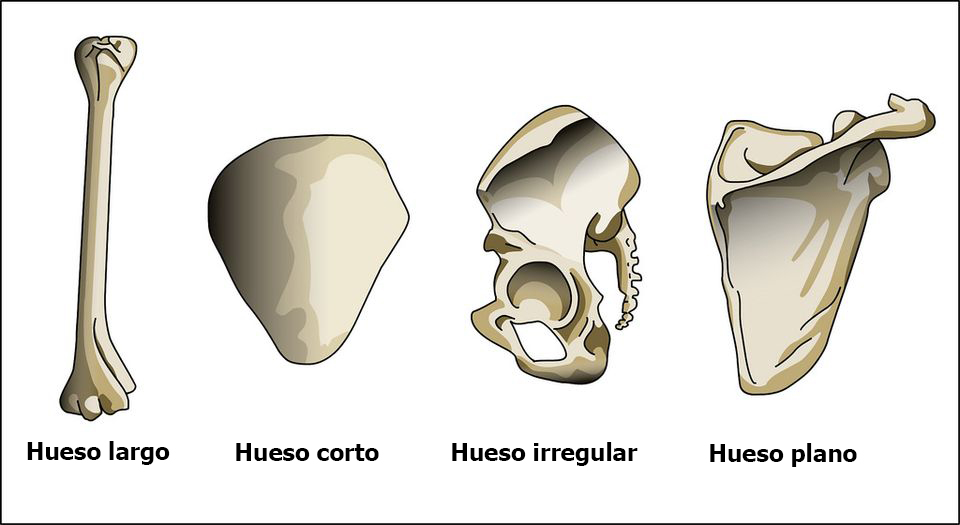

Se clasifican principalmente según su forma, abarcando categorías que ofrecen una comprensión más profunda de la estructura del sistema óseo. A continuación, se detallan los distintos tipos de huesos:
Huesos largos
Estos huesos se caracterizan por ser cilíndricos, alargados y rectos, presentando dos extremos claramente diferenciados conocidos como epífisis. Un ejemplo paradigmático de esta categoría es el fémur, el cual desempeña un papel fundamental en el soporte y la movilidad del cuerpo humano.
Huesos cortos
De dimensiones reducidas y forma achatada, los huesos cortos, como los localizados en la muñeca poseen características que favorecen la articulación y flexibilidad de las extremidades, a pesar de su tamaño más compacto.
Huesos planos 
Diseñados para proteger las partes blandas del cuerpo, especialmente las superficies extensas, los huesos planos como el cráneo ofrecen una barrera sólida que resguarda órganos vitales, como el cerebro, de posibles daños externos.
Huesos sesamoideos
Estos son pequeños huesos ubicados en las articulaciones, desempeñando un papel crucial al aumentar la palanca ósea y permitir movimientos eficientes. La rótula, ejemplifica este tipo de hueso facilitando la flexión de la rodilla.
Huesos irregulares
Diferenciándose por carecer de una forma definida similar a las categorías anteriores, los huesos irregulares ocupan distintas ubicaciones en el cuerpo y desempeñan funciones diversas y específicas, adaptándose a las necesidades particulares del organismo.
Un ejemplo de hueso irregular son las vértebras que forman la columna vertebral.